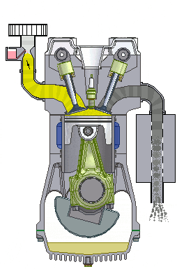
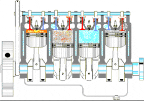
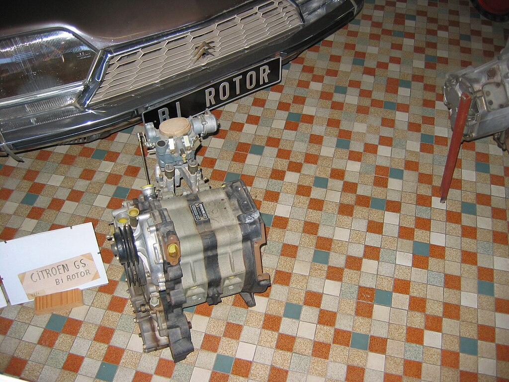
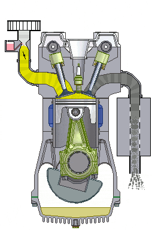
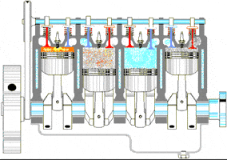
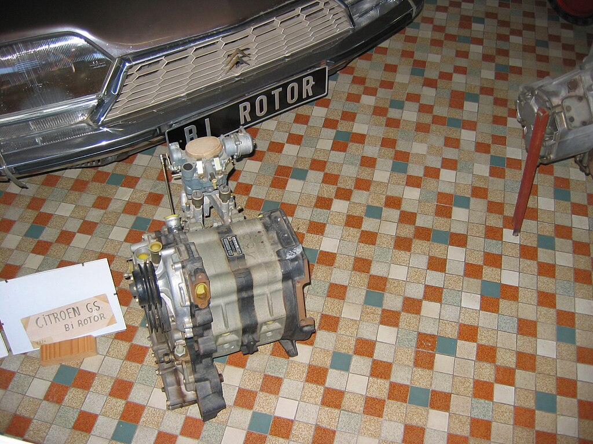

Sur cette page, vous pouvez voir les caractéristiques de ce type de moteur et ses différences par rapport au moteur à piston plus conventionnel.
Ce moteur utilise un rotor triangulaire bombé tournant dans une chambre ovale pour effectuer les quatre temps du cycle (admission, compression, combustion, échappement). Cela apporte donc un certain nombre de différences par rapport au moteur à piston dit alternatif.
| Caractéristiques | Moteur Wankel (rotatif) | Moteur à piston (alternatif) |
|---|---|---|
| Fonctionnement | mouvement rotatif du rotor | mouvement alternatif de pistons de haut en bas |
| Nombre de pieces et masse | Peu de pieces pour un poid léger (pas de soupapes, bielles...) | Beaucoup de pieces pour un poid plus lourd |
| Régime maximal | Plus élevé entre 7000-10000 tr/min | Plus bas entre 4000-7000 tr/min (4000-5000 pour un diesel) |
| Rendement puissance/cylindrée (sans turbo/compresseur) | Plus élevée (plus de 100 ch/L) | Plus basse (entre 50 et 100 ch/L) |
| Couple produit | Plus bas, surtout à bas régime (usage sportif) | Plus élevé, surtout pour un Diesel (usage quotidien, sportif, utilitaire) |
| Vibrations | Très faibles (rotation continue) | Plus importantes (mouvement alternatif et pire pour un diesel) |
| Consommation et rendement énergétique | Très élevée par rapport à la cylindrée (entre 8 et plus de 20L/100km) | Plus basse pour une cylindrée équivalente (entre 4 et 12L/100km) |
| Émissions polluantes | Plus élevées (dû à la forme de la chambre de combustion et à la lubrification) | Plus basses (meilleure combustion et moins de lubrification) |
| Fiabilité et maintenance | Moins fiable mais maintenance simple (usure rapide des joints d'étanchéité dit "apex" et de la chambre de combustion sans utilisation régulière) | Plus fiable mais maintenance complexe (usure plus lente des pièces mécaniques) |
Comparaison sonore :
Moteur Wankel d'une Mazda Cosmo (1967)
Moteur Wankel d'une Mazda RX-7 (1992)
Autre moteur Wankel
Moteur à pistons 4-cylindres en ligne (type le plus commun)
Autre moteur 4-cylindres en ligne
Moteur 3-cylindres en ligne (type commun en dessous de 1.3L)
Illustrations (survolez les images pour une courte description):
 




